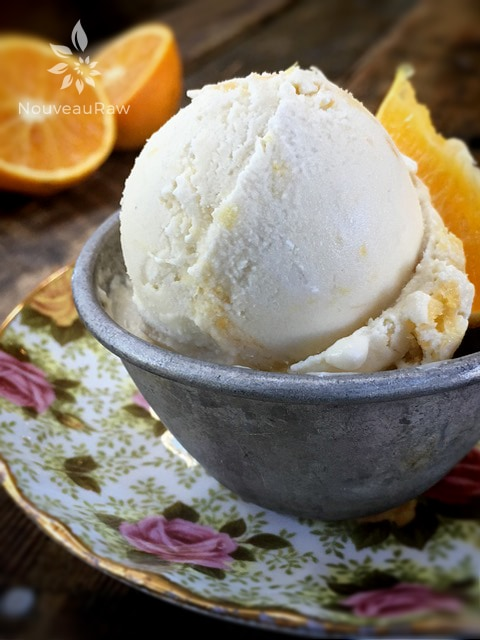

Honey Page Mandarin Ice Cream

Not too long ago, I made a Honey Tangerine Ice Cream for some friends of ours. They enjoyed it so much, they asked for more. But sadly, I found out that Honey Tangerines were now out of season. I must have just squeaked in because that was only a few weeks ago.
So, I went on a hunt for another type of citrus to use. That is when I stumbled upon the Page Mandarin. I asked the produce worker if I could sample one. In one bite, I knew this would make a great ice cream.
Page Mandarins are a medium size citrus fruit, with medium-thin, leathery rind. They are a reddish-orange when mature. Once cutting into it, I was taken back by the deep orange flesh. And oooh so juicy! They are known as one of the best mandarins for juice. Page mandarins ripen in the winter, which explains their disappearing act on me now. :)
This ice cream turned out smooth and creamy, light and refreshing. The rich and sweet flavors of the page mandarin are perfect for the warming temperatures. For fun, quick treat… freeze this ice cream in small Dixie cups (3oz) and put a popsicle stick in the center. As the kids speed through the house, racing from the front door to the back door, hand them a Honey Page Mandarin Pop to enjoy outside.
Oh, and I should mention that you don’t have to use Page Mandarins if you can’t find them. Any orange citrus would do. I have made this recipe many times, and I use whatever is available to me at the time, and they all turn out wonderful. I do hope that you enjoy this recipe. Please let me know below if you give this recipe a try. Blessings, amie sue

Ingredients:
Yields 5 cups batter
Preparation:
- Place the cashews in a glass bowl, along with 4 cups of water.
- Soak for at least 2 hours.
- The soaking process will help reduce phytic acid, which will aid in digestion.
- The soaking also softens the cashews, so they blend nice and creamy.
- After the cashews are through soaking, drain, and rinse.
- If you make your own coconut milk/cream… add the least amount of liquid to it, so you get a heavy cream.
- In a high-powered blender combine the coconut cream, honey, mandarin juice, cashews, stevia, and salt. Blend until creamy.
- Due to the volume and the creamy texture that we are going after, it is important to use a high-powered blender. It could be too taxing on a lower-end model.
- Blend until the filling is creamy smooth. You shouldn’t detect any grit. If you do, keep blending.
- This process can take 2-4 minutes, depending on the strength of the blender. Keep your hand cupped around the base of the blender carafe to feel for warmth. If the batter is getting too warm. Stop the machine and let it cool. Then proceed once cooled.
- Feel free to also add segments of the citrus in the ice cream. Just be sure to remove the membrane as that is tough and bitter.
- Place the blender carafe in the freezer for 1 hour.
- Pour the batter into the ice cream machine and follow the manufacturer’s instructions.
- If you don’t have an ice-cream machine, pour the batter into a glass dish, cover, and place in the freezer. Give the ice cream a stir about every 30 minutes until firm.
- To serve, allow the ice cream to soften at room temperature for about 15 minutes.
Freezing Suggestions for Ice Cream:
-
-
Freeze in popsicle molds or 3 oz Dixie cups with a popsicle stick inserted.
-
-
Store the ice cream in the very back of the freezer, as far away from the door as possible. Every time you open your freezer door you let in warm air. Keeping ice cream way in the back and storing it beneath other frozen-sold items will help protect it from those steamy incursions.
-
Ice cream is full of fat, and even when frozen, fat has a way of soaking up flavors from the air around it—including those in your freezer. To keep your ice cream from taking on the odors, use a container with a tight-fitting lid. For extra security, place a layer of plastic wrap between your ice cream and the lid.
-
To soften in the refrigerator, transfer ice cream from the freezer to the refrigerator 20-30 minutes before using. Or let it stand at room temperature for 10-15 minutes.
-
Wish to make your own raw ice cream, wonder what machine I might recommend, and more? Click (
here) to check out the Reference Library!
© AmieSue.com